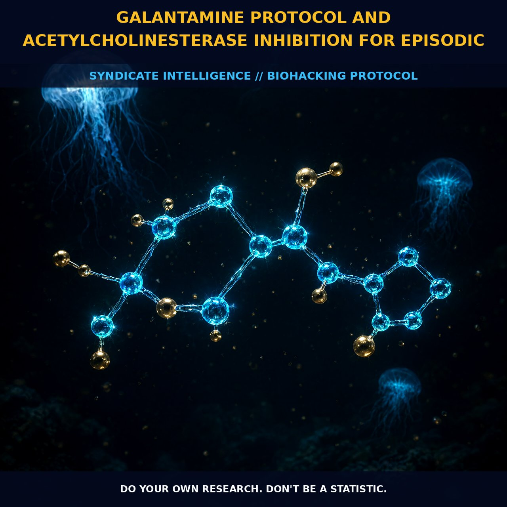

Galantamine Protocol: Acetylcholinesterase Inhibition for Episodic

1. Pharmacological Dynamics: Dual-Action Cholinergic Modulation
Galantamine operates as a sophisticated dual-action modulator within the cholinergic system, functioning primarily as an acetylcholinesterase inhibitor while simultaneously exhibiting agonist properties at the receptor level. By inhibiting the specific enzyme responsible for breaking down acetylcholine, it effectively slows the degradation rate, allowing acetylcholine concentrations to accumulate more rapidly than they are consumed. This creates a pharmacological environment where the brain manufactures acetylcholine faster than it is cleared, leading to a sustained elevation of available neurotransmitter pools.
The compound is characterized by rapid absorption kinetics, reaching peak plasma levels approximately 60 minutes post-ingestion, which makes it highly suitable for acute cognitive or sleep-state interventions. The duration of action extends significantly beyond this peak concentration window, with the compound remaining active in the system for up to 48 hours. This prolonged elimination half-life means that acetylcholine levels stay elevated well beyond the immediate administration period, providing a continuous cholinergic tone rather than a sharp spike and drop profile.
Because it acts as both an inhibitor of breakdown and a potential agonist, Galantamine delivers a compounded boost to apparent acetylcholine activity within the brain tissue. This dual mechanism distinguishes it from simple precursors by altering both the supply side through precursor availability and the demand side by reducing enzymatic turnover.
2. Biological Leverage: Sleep Architecture and Episodic Memory
The primary biological leverage of Galantamine lies in its ability to manipulate sleep architecture, specifically by suppressing deep sleep phases while promoting direct transitions into REM states. When administered after four to five hours of sleep, the elevated acetylcholine levels allow individuals to bypass traditional wakefulness and move directly from wakefulness into a dream state with unbroken consciousness. This specific physiological shift is critical for facilitating Wake Initiated Lucid Dreams, as the high cholinergic activity maintains cortical arousal even as the body enters the REM cycle.
Beyond sleep modulation, Galantamine supports episodic memory consolidation by modulating pathways involved in hippocampal plasticity and synaptic transmission. The compound has shown promise for counteracting memory deficits induced by anticholinergic agents like scopolamine, suggesting a robust capacity to preserve long-term memory formation processes. Research indicates that Galantamine can attenuate age-related declines in exploratory behavior and markers of hippocampal health.
By enhancing cholinergic neurotransmission in the hippocampus and prefrontal cortex, it helps maintain cognitive clarity and working memory during periods of high metabolic demand or pharmacological challenge, preserving the structural integrity of neural circuits responsible for memory retrieval.
3. Tactical Implementation: Synergistic Dosing and Timing
For optimal episodic memory consolidation and lucid dreaming induction, the protocol centers on a combination of Galantamine with a choline salt such as Choline Bitartrate or Citrate. The recommended dosage range is 4 to 8 mg of Galantamine paired with 250 to 500 mg of choline. This specific pairing jump-starts acetylcholine production to work synergistically with the enzyme inhibition, accelerating the rise in acetylcholine levels more quickly than Galantamine alone.
Timing is a critical variable in this protocol; administration should occur approximately 4.5 hours after lights out, following the third REM cycle, to capture the natural rise in endogenous acetylcholine. Users should remain awake for at least 30 minutes post-ingestion before returning to sleep to utilize the peak plasma concentration window effectively. Avoiding formulations that include melatonin prevents confounding variables in the cholinergic signaling pathway.
Due to the long half-life and potential for tolerance or desensitization from sustained elevation of acetylcholine levels, it is prudent to avoid daily continuous use and consider periodic cycling. Higher doses exceeding 12 mg may introduce side effects due to receptor saturation, making the lower end of the dosage spectrum the sweet spot for consistent, long-term biological optimization.
Prostar Life Hack
The 4.5-Hour Window: Set an alarm precisely 270 minutes after your initial lights out. Stay fully awake for 30 minutes to let plasma levels peak, then return to bed to trigger a direct transition from NREM to REM lucidity without the intermediate wakefulness phase.
Prostar Life Hack
The 4.5-Hour Window: Set an alarm precisely 270 minutes after your initial lights out. Stay fully awake for 30 minutes to let plasma levels peak, then return to bed to trigger a direct transition from NREM to REM lucidity without the intermediate wakefulness phase.
[ AUTHOR: LEAD TECHNICAL RESEARCHER ]